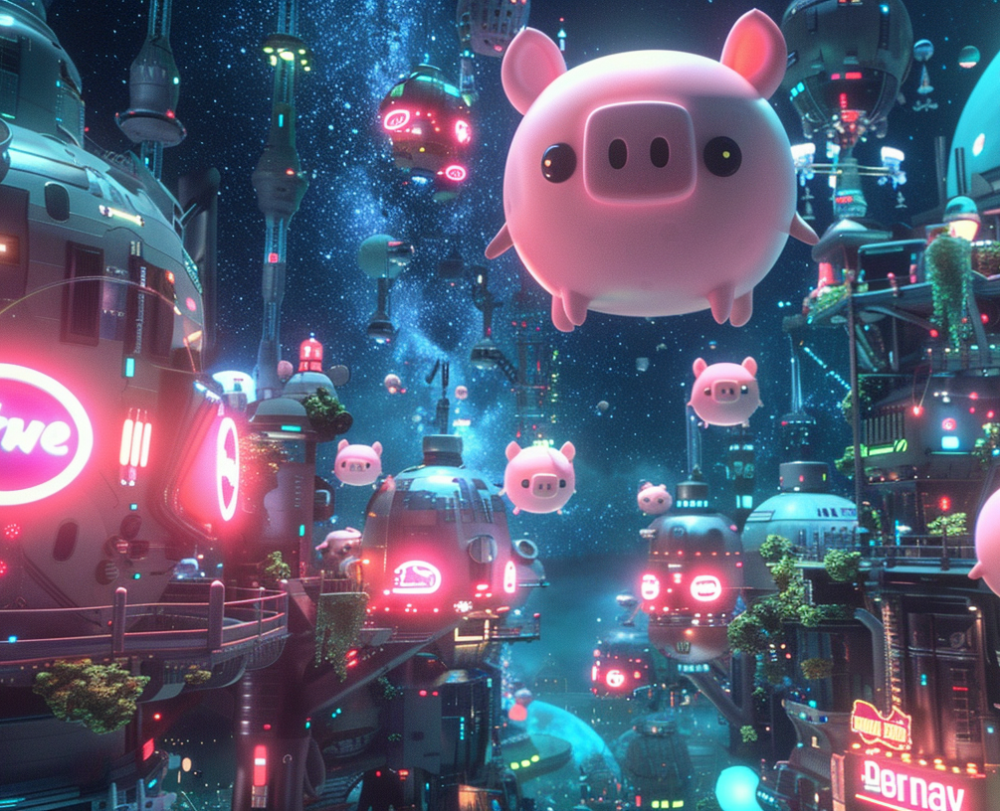
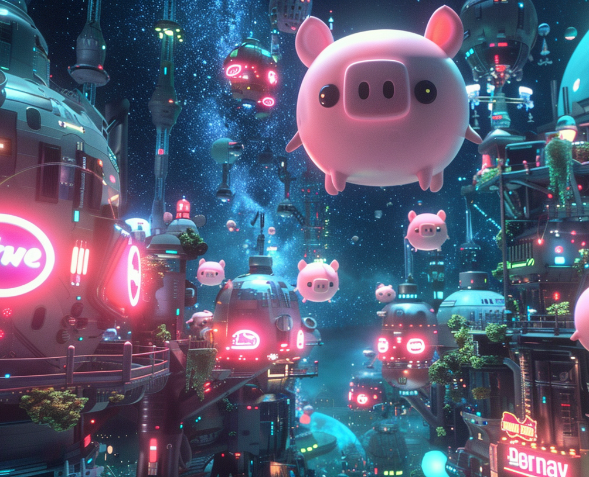

Origins
In the 1960s, during a turbulent era of scientific experimentation, humans embarked on a venture that would forever
alter the course of evolution on Earth. In their relentless pursuit to enhance human intelligence, scientists
conducted controversial experiments on both pigs and chimpanzees. Years of testing culminated in the administration of
a super-serum, designed to accelerate cognitive development. However, their efforts appeared to be colossal failure,
as the expected results would not materialize as anticipated.
Unknown to humanity, the intelligence serum had not failed entirely; rather, its effects were far subtler and much
slower than predicted. Unbeknownst to humans, this serum had indeed altered the genetic code of the test subjects,
setting in motion a transformation that would change the course of their subjects evolution.
As these serum-induced mutations manifested, the affected pigs and chimps began to exhibit signs of heightened
intelligence, gradually increasing with each new generation. Their cognitive abilities expanded at an astonishing rate, far
surpassing the natural development that humans had undergone. While humanity descended into conflict and a disheartening
trend of intellectual mediocrity, the pigs and chimps waited in the shadows undergoing a silent transformation.
By the time humanity had reached its inevitable demise, leaving the Earth scarred and depleted, the descendants of those
experimentally altered pigs and chimps emerged as the new dominant species. The pigs, carrying the
genetic legacy of those initial experiments, now possessed an intellect akin to their past captors, while the AstroChimps,
who had been sent into space during cold war trials, had survived and similarly evolved into hyper-intelligent beings.
Same in nature, yet, so very different in nurture, the futures of these divergent kin would soon collide in a struggle
mankind had never imagined...


 
